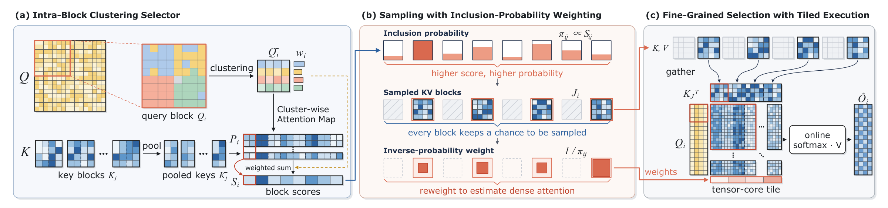

Training-free video diffusion
AB-Attention
Accurate Block Attention for
Accelerating Video Diffusion Transformers
† Corresponding authors
The idea
Abstract
Video diffusion transformers generate high-quality videos, but the quadratic cost of 3D full attention dominates their inference. Dynamic block-sparse attention reduces this cost by selecting key/value blocks from the current activations and computing exact attention only on the selected ones. However, its fidelity degrades under aggressive sparsity: blocks are scored from coarse summaries or formed by costly global clustering, pruned blocks vanish from the softmax, and whole tiles are kept or dropped even when only a few of their keys matter.
We present Accurate Block Attention (AB-Attention), a training-free method that addresses each limitation. Its Intra-Block Clustering Selector (IBCS) estimates block importance faithfully yet cheaply by clustering queries only within each query block, without permuting tokens. Sampling with Inclusion-Probability Weighting (SIP) then samples blocks in proportion to these estimates and reweights them by inverse inclusion probability, so that one pass estimates dense attention rather than truncating it. Finally, its kernel gathers key/value blocks much smaller than a tile into full tensor-core tiles, refining selection at no extra tensor-core cost.
On Wan2.1 and HunyuanVideo, AB-Attention skips 89–92% of attention, whereas the baselines compute 1.8–3.6× as much, yet it still improves PSNR by up to 4.4 dB over the strongest baseline and achieves up to 2.23× end-to-end speedup.
The method
How AB-Attention works
Estimate block importance, sample and reweight, then gather small blocks into full GPU tiles.


01 Intra-block clustering
Cluster queries within each block to score small key/value blocks, keeping the original token order.
02 Sample and reweight
Sample blocks in proportion to their scores and apply inverse-inclusion weights to estimate dense attention.
03 Execute in full tiles
Gather four-token key/value blocks on chip into full tensor-core tiles for a single attention pass.
See it in motion
Qualitative comparisons
Wan2.1-T2V-14B · 720p · matched prompts and seeds
“A magpie takes off with a twig in its beak, in anime style.”
Full attention
PSNR 30.51 dB
PSNR 26.64 dB
PSNR 27.53 dB
PSNR is measured over each complete video against its dense reference. These qualitative examples were generated on GH200.
The numbers
Results across three video models
Evaluation on the 600-prompt Penguin Benchmark.
| Model | Sparsity ↑ | PSNR ↑ | SSIM ↑ | LPIPS ↓ | Speedup ↑ |
|---|---|---|---|---|---|
| Wan2.1 · 1.3B | 89.16% | 34.436 | 0.9328 | 0.0734 | 2.01× |
| Wan2.1 · 14B | 89.16% | 30.788 | 0.9169 | 0.0964 | 1.84× |
| HunyuanVideo · 13B | 92.35% | 34.347 | 0.9480 | 0.0700 | 2.23× |
PSNR, SSIM, and LPIPS compare against dense attention. End-to-end speedup is measured against the dense FlashAttention-3 baseline on NVIDIA H20. See the paper for the full baseline comparison and timing protocol.
BibTeX
@misc{xu2026abattention,
title = {{AB-Attention}: Accurate Block Attention for
Accelerating Video Diffusion Transformers},
author = {Bin Xu and Mo Zhang and Zhengfeiyang Zhang and
Xinfeng Yang and Yixing Ma and Wei Wang and
HeXin Wang and Pengfei Zhou and Wangbo Zhao},
year = {2026},
url = {https://xubin04.github.io/AB-Attention/}
}